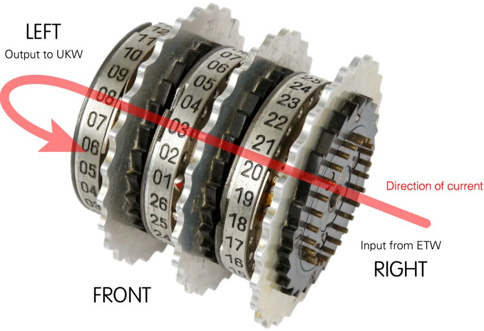
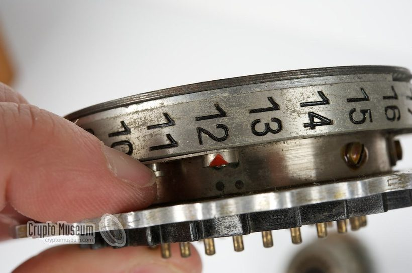
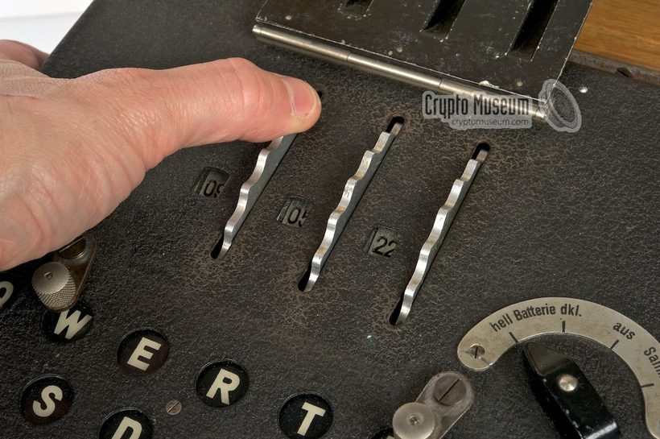
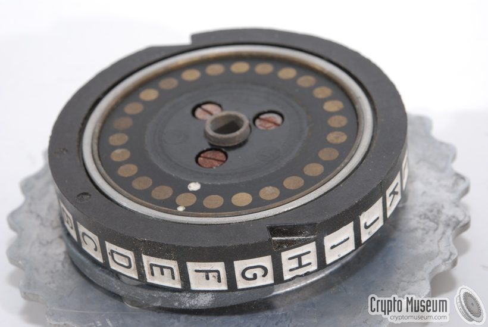
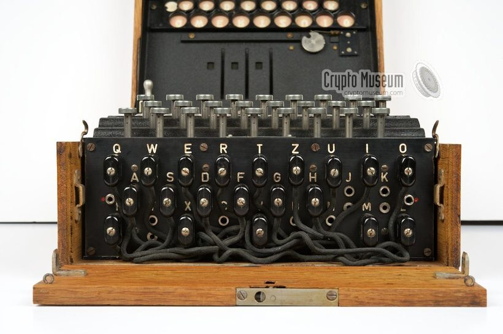
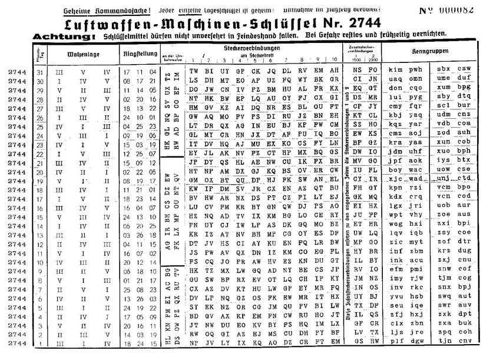

Yazının bu kısmında Enigma'nın bileşenlerini ve bu bileşenlerin çalışma prensiplerini inceleyeceğiz. İnceleyeceğimiz model Enigma M3 olacak; örnekleri C dili ile yazdığım simülatörle hazırladım.
Enigma'nın çalışma prensibi temelde elektrik devrelerine dayanır ama bu yazıda elektrik devreleri değil matematik konuşacağız. Enigma'nın temel bileşenleri (rotorlar, yansıtıcı, fiş panosu bağlantıları)
kümesinin birer permütasyonu olacak. Elektriğin bir bileşenden diğer bileşene akması da permütasyonların çarpımına (bileşkesine) karşılık gelecek. Yani x_k harfi y_k harfine
permütasyonu ile dönüşecek. Ayrıca her k adımı için Enigma farklı bir permütasyon üretecek. Yani büyük olasılıkla metindeki aynı harfler farklı birer harfe dönüşecek. Ayrıca bu sebepten dolayı farklı harfler aynı harfe dönüşebilir. Enigma'nın her seferde farklı bir permütasyon üretme sebebi de rotorların dönerek her seferinde farklı bir permütasyon oluşturmasıdır. Şimdi bu dönme mekanizmasını ve rotorlar ile ilgili ayarları inceleyelim.
Rotorlar (Walzen)
Enigma makinesinin şifreleme gücü, Walzen adı verilen rotorlardan gelir. Her rotor, sert kauçuktan yapılmış bir disktir ve alfabedeki 26 harfi temsil eden 26 giriş ve 26 çıkış noktasına sahiptir. Rotorun sağ yüzünde yaylı pinler, sol yüzünde ise düz metal plakalar bulunur. Rotorun içerisindeki karmaşık kablolama, sağdaki bir pini soldaki bir plakaya bağlar.

Matematiksel olarak ifade edersek; bir rotorun iç kablolaması, \Sigma kümesi üzerinde tanımlı bir \sigma permütasyonudur. Enigma'yı güçlü kılan, bu rotorların hareketli olmasıdır. Her tuş vuruşunda en sağdaki rotor (hızlı rotor) bir adım döner. Bu dönme hareketi, fiziksel giriş-çıkış noktalarını kaydırır ama rotorun içindeki elektrik kablo bağlantılarını değiştirmez. Bu bağlantılar taban permütasyonu olarak adlandırılır. Enigma M3 modelinde toplam 5 çeşit rotor vardır (deniz kuvvetlerine ait enigmada 8 çeşit). Bu rotorlardan 3 tanesi seri olarak bağlanır. Bu 5 rotorun taban permütasyonları şu şekildedir:
Halka Ayarı (Ringstellung) ve Başlangıç Ayarı (Grundstellung)
Enigma kullanarak şifreleme yaparken, sadece rotorların dizilişi ayarlanmaz. Ayrıca bu rotorların başlangıç durumları da ayarlanır. Bir rotor makineye yerleştirilmeden önce ve yerleştirildikten sonra olmak üzere iki kere ayarlanır. Bu ayarlar, rotor permütasyonlarını değiştirir. Bu ayarlar şu şekildedir:
Halka Ayarı (Ringstellung): Rotorun içindeki kablolama çekirdeği (core) ile üzerindeki harflerin yazdığı dış halka arasındaki açısal farktır. Bu ayar, rotor makineye takılmadan önce elle yapılır ve şifreleme boyunca sabit kalır. Matematiksel olarak bu, taban permütasyonuna sabit bir ofset eklemektir.
Başlangıç Ayarı (Grundstellung): Rotor makineye takıldıktan sonra operatörün pencerede gördüğü harftir. Bu, rotorun makine içerisindeki o anki dönme pozisyonunu ifade eder. Her tuşa basışta bu harf değişir.


Bu iki ayar birleşerek rotorun taban permütasyonuna göre net dönme miktarı belirlenir. Eski model enigmalarda halka ayarı bulunmamaktadır; güvenliği artırmak için sonradan eklenmiştir. Şimdi net dönme miktarını belirlemek için harflere birer sayı atayalım:
| A | B | C | D | E | F | G | H | I | J | K | L | M |
|---|---|---|---|---|---|---|---|---|---|---|---|---|
| 0 | 1 | 2 | 3 | 4 | 5 | 6 | 7 | 8 | 9 | 10 | 11 | 12 |
| N | O | P | Q | R | S | T | U | V | W | X | Y | Z |
| 13 | 14 | 15 | 16 | 17 | 18 | 19 | 20 | 21 | 22 | 23 | 24 | 25 |
İki harfi toplayıp çıkarırken o harflere karşılık gelen sayılar toplanır veya çıkarılır. Daha sonra \mathrm{mod}(26) uygulanır. Örneğin B+E=F, N-Y=P olur.
Enigma'nın halka ayarları soldan sağa sırasıyla r_1, r_2, r_3 ve başlangıç ayarları g_1, g_2, g_3 olsun. Bu durumda Enigma'nın her bir rotorunun net dönme miktarı (k), şu şekilde hesaplanır:
Şimdi rotorun bir adım dönmesi durumunda oluşan permütasyonu bulalım. Rotorun o anki permütasyonu \sigma olsun. Rotor bir adım döndüğü zaman elektriğin girdiği sabit pine göre bir ileri kaymış olur. Bu da (A\,B\,\dots\,Z) permütasyonunun uygulanması demektir. Ardından rotorun iç kablolamasından geçer, yani \sigma uygulanır. En son olarak çıkıştaki sabit pine göre de bir birim geri hareket ettiği için (Z\,Y\,\dots\,A) permütasyonu uygulanır. Sonuç olarak yeni permütasyon
olur. Bu fikri genelleyerek rotor k kere döndüğü zaman
permütasyonunu elde ederiz. Bu dönme mantığını kullanarak rotorların başlangıçtaki permütasyonunu bulalım. Başlangıç ayarı g ve halka ayarı r olan rotor R için k = g - r olmak üzere başlangıç permütasyonu,
olarak bulunur.
\rho = (A\,B\,\dots\,Z) diyelim. R \in \{I, II, III, IV, V\} rotorun k kez dönmesi durumunda, oluşan permütasyon ile taban permütasyonu arasında
şeklinde ilişki olduğu için R(k) ile \Pi_R eşlenik permütasyonlardır. Teorem 5'ten dolayı eşlenik permütasyonlar aynı döngü tipine sahiptir. Dolayısıyla rotor döndüğünde permütasyon değişse de döngü tipi sabit kalır.
Şimdi örnek olarak taban permütasyonunda bulunan 1. rotoru bir tur döndürüp oluşan permütasyonu bulalım:
Yani aslında rotorun dönmesi, permütasyonun array gösteriminde bir birim sola kaydırıp tüm harflerden bir çıkarmaya denktir. Şimdi bu iki permütasyonu ayrık döngülerin çarpımı olarak
ve
yazalım. Görüldüğü üzere her iki permütasyon da (10,4,4,3,2,2,1) döngü tipine sahiptir. ∎
Kerti ve Rotorların Dönme Mekanizması
Enigma makinesinin kriptografik periyodunu belirleyen temel unsur, rotorların birbirini tetikleyerek dönme mekanizmasıdır. Her rotorun sağ tarafında 26 dişli bir dişli çark (ratchet) ve sol tarafında, halka üzerine oyulmuş bir kerti (notch) bulunur. Rotorların hareketi, klavyedeki tuşlara basıldığında hareket eden üç adet yaylı mandal (pawl) tarafından kontrol edilir.

Dönme mekanizmasının temel kuralları şunlardır:
Hızlı Rotor (Sağ): Her tuşa basışta bir adım döner.
Orta Rotor: Sağdaki rotorun kertisi, mandalın tırnağına denk geldiğinde bir adım döner.
Yavaş Rotor (Sol): Orta rotorun kertisi, mandalın tırnağına denk geldiğinde bir adım döner. Bu sırada orta rotor da bir adım döner.
Enigma'nın mekanik yapısındaki bir özellikten dolayı, orta rotor sol (yavaş) rotoru döndürdüğü adımda kendisi de bir kez daha döner. Bu durum çifte adım (double stepping) olarak adlandırılır. Bundan dolayı makinenin toplam periyodu 26^3 = 17{,}576 yerine 26 \times 25 \times 26 = 16{,}900 olur.
Ek olarak, rotorun kertisi dönme mekanizmasını tetiklediği anda, panelde görülen harfe devir noktası (turnover point) adı verilir. Halka ayarı (Ringstellung), kerti ile dış halka bütünleşik olduğu için kerti harfini değiştirmez; kerti her zaman halkanın üzerindeki belirli bir harfin yanındadır.
Bu açıklamalara göre; rotorların soldan sağa anlık konumları g_1, g_2, g_3 ve devir noktaları d_1, d_2, d_3 olmak üzere, dönme mekanizmasını ifade eden pseudocode Algoritma 1'deki gibidir:
- eğer g_2 = d_2 ise (orta rotor devir noktasında mı?)
- g_1 \leftarrow (g_1 + 1) \bmod 26 (sol rotoru döndür)
- g_2 \leftarrow (g_2 + 1) \bmod 26 (orta rotoru döndür — çifte adım)
- değilse eğer g_3 = d_3 ise (sağ rotor devir noktasında mı?)
- g_2 \leftarrow (g_2 + 1) \bmod 26 (orta rotoru döndür)
- g_3 \leftarrow (g_3 + 1) \bmod 26 (sağ rotor her adımda döner)
Enigma M3 modelinde kullanılan rotorların kerti (notch) pozisyonları ve devir noktası (turnover) harfleri Tablo 1'de verilmiştir. Deniz Kuvvetlerinin kullandığı Rotor VI, VII ve VIII'de birbirinin taban tabana zıttında bulunan iki kerti bulunmaktadır. Bu da periyodu yarıya düşürür; bu sebeple enigmada en fazla bir tane iki kertili rotor kullanmışlardır.
| Rotor | Kerti Harfi (Notch) | Devir Noktası (Turnover) |
|---|---|---|
| I | Y | Q |
| II | M | E |
| III | D | V |
| IV | R | J |
| V | H | Z |
Tablo 1: Enigma rotorlarının kerti pozisyonları ve dönüş sırasında enigmanın panelinin gösterdiği devir harfi.
Yukarıda bahsettiğimiz çifte adımdan dolayı orta rotor art arda iki kere dönebilir. Örnek olarak enigmanın rotor dizilimi I, II, III ve rotorların başlangıç ayarı ADU şeklinde olsun. Bir tuşa bastığımızda sağdaki rotor döner ve rotor pozisyonları ADV olur. Tuşa bir kere daha bastığımızda sağdaki rotor döner. Ayrıca en sağdaki rotor devir noktasına ulaştığı için ortadaki rotor da bir adım döner ve yeni rotor pozisyonu AEW olur. Bir kere daha tuşa basalım. Bu durumda orta rotor da devir noktasına ulaştığı için sol rotor ve orta rotor birer adım döner (sağ rotor her zaman döner) ve rotor pozisyonu BFX'e dönüşür.
Yansıtıcı (Umkehrwalze)
Elektrik akımı rotorlardan geçtikten sonra enigmanın en solunda bulunan yansıtıcı (umkehrwalze) adı verilen bileşene gelir. Yansıtıcı, elektrik sinyalini alır ve harfleri ikili çiftler şeklinde eşler. Elektrik akımı buradan rotorları takip ederek geri döner. Rotorların aksine bu bileşen sabittir. Matematiksel olarak yansıtıcı, \Sigma alfabe kümesi için \rho \in \mathrm{Sym}(\Sigma) şu özellikleri sağlayan bir permütasyondur:
- Tüm x \in \Sigma için x\rho \neq x olur. Yani yansıtıcı hiçbir harfi kendine götürmez.
- \rho, 13 tane iki uzunluğunda ayrık döngünün çarpımı olduğu için Teorem 7 gereği \rho bir involüsyondur. Yani \rho = \rho^{-1} olur. Bu da yansıtıcının harfleri karşılıklı olarak eşleştirmesinin bir sonucudur.
Enigma M3'te iki çeşit yansıtıcı bulunmaktadır:
Fiş Panosu Bağlantıları (Steckerverbindungen)
Şimdi enigmaya 1928 yılında eklenen ve toplam ihtimal sayısını milyonlardan sekstilyonlara çıkaran fiş panosu bağlantılarını (Steckerverbindungen) anlatalım. Matematiksel olarak fiş panosu bağlantılarını \tau \in \mathrm{Sym}(\Sigma) permütasyonu ile ifade edelim. \tau permütasyonu ayrık transpozisyonların çarpımı şeklindedir. Eğer iki harf arasına kablo bağlanmışsa, bu harfler \tau'nun ayrık döngülerin çarpımı şeklinde yazıldığında ikili bir çift olarak (örneğin (AB)) görünür. Herhangi bir kablo ile bağlanmamış harfler ise permütasyon altında sabit nokta olarak kalır (yani x\tau = x).

Enigma ile Şifreleme ve Deşifreleme
Enigma ile metin şifrelerken; şifrelemeden önce rotor dizilişleri, rotorların halka ve başlangıç ayarları ve fiş panosu bağlantıları, gönderici ve alıcı arasında önceden kararlaştırılmış olan günlük anahtar yönergesine uygun olarak yapılandırılmalıdır.

Makinenin çalışma prensibi, elektrik devresinin tamamlanması esasına dayanır. Kullanıcı klavyede bir tuşa bastığında şu işlemler sırasıyla gerçekleşir:
- Devre kapanmadan hemen önce, sağ rotor (ve duruma göre diğer rotorlar) mekanik olarak bir adım döner. Bu, her harf şifrelenirken makinenin farklı bir permütasyon durumunda olmasını sağlar.
- Sinyal önce fiş panosundan geçer. Yani \tau permütasyonu uygulanır.
- Giriş bölgesi (ETW) üzerinden rotorlara girer. Sırasıyla Sağ (R_3), Orta (R_2) ve Sol (R_1) rotorlardan geçer. Yani R_3(k_3)R_2(k_2)R_1(k_1) permütasyonu uygulanır.
- En soldaki yansıtıcı, sinyali alır ve harfleri ikili çiftler halinde eşler. Yani \rho uygulanır.
- Sinyal bu kez rotorlardan ters yönde (Sol → Orta → Sağ) geçer. Dolayısıyla R_1^{-1}(k_1)R_2^{-1}(k_2)R_3^{-1}(k_3) permütasyonu uygulanır.
- Son olarak tekrar fiş panosundan geçer. Burada da \tau^{-1} uygulanır. Son olarak lamba panosundaki şifreli harfi aydınlatır.
Matematiksel olarak enigmanın permütasyonunu \mathcal{E} ile göstereceğiz. Yukarıda anlattıklarımıza göre rotor dizilişleri soldan sağa R_1, R_2, R_3; rotorların başlangıç ayarı g_1, g_2, g_3 ve halka ayarı h_1, h_2, h_3 olduğunda bu permütasyon:
olarak bulunur. Buradaki k_1 = g_1 - h_1, k_2 = g_2 - h_2 ve k_3 = g_3 - h_3'tür.
Teorem 1'den dolayı [\tau R_3(k_3) R_2(k_2) R_1(k_1)]^{-1} = R_1^{-1}(k_1) R_2^{-1}(k_2) R_3^{-1}(k_3) \tau^{-1} olur. Bu da yansıtıcı permütasyonu \rho ile \mathcal{E}'nin eşlenik permütasyonlar olması anlamına gelir. Teorem 5'ten dolayı eşlenik permütasyonlar aynı döngü tipine sahip olduğu için ve \rho, 13 tane iki uzunluğunda ayrık döngünün çarpımı olduğu için \mathcal{E} de öyledir. Dolayısıyla Teorem 7'den dolayı \mathcal{E} bir involüsyondur ve \mathcal{E} tek uzunluğunda döngü içermediği için hiçbir elemanı sabitlemez.
Bu teoremin doğal bir sonucu olarak; başlangıç ayarları, halka ayarları ve fiş panosu bağlantıları özdeş olan bir Enigma makinesine şifreli metin girildiğinde, makine metni eski haline geri getirir. Bunun nedeni, makinenin şifreleme fonksiyonu \mathcal{E}'nin bir involüsyon olmasıdır. Şifrelenmiş bir harfe aynı işlem tekrar uygulandığında, \mathcal{E}'nin karesi birim permütasyona eşit olacağından;
eşitliği sağlanır ve başlangıçtaki harf elde edilir. ∎
Bir örnek yapalım. UKW-B kullanan bir enigma ile çalıştığımızı düşünelim. Rotor dizilişleri soldan sağa Rotor I, II, IV olsun. Başlangıç ayarı BER ve halka ayarı GEC olsun. Fiş panosu bağlantıları (KG)(NO)(UD)(TE)(HL) şeklinde olsun. T harfine basalım. Sağdaki rotor döner. Orta rotor devir noktasında olduğu için ortadaki rotor ve soldaki rotor da bir adım döner. Yeni rotor pozisyonu CFS ve net rotor pozisyonu WBQ olur. Bu durumda rotor permütasyonları şöyledir:
\mathcal{E} permütasyonunu hesaplayalım:
Görüldüğü üzere \mathcal{E} permütasyonu hiçbir elemanı sabitlemeyen ve 13 tane ayrık transpozisyon çarpımı olan bir permütasyondur. Şimdi T harfinin izlediği yolu bulalım:
Bu ayarlara sahip enigma TURING sözcüğünü VZSOMZ mesajına dönüştürür.
Kombinatorik Analiz
Enigma M3 Modelinde olabilecek toplam anahtar sayısı, rotorların, halka ve başlangıç ayarlarının ve fiş panosu bağlantılarının konfigürasyonlarının çarpımı ile hesaplanır.
Rotor Dizilimi
Mevcut 5 rotordan 3 tanesinin seçilip sıralanması permütasyon hesabı ile bulunur:
Başlangıç Konumları
Her üç rotorun da başlangıç pozisyonu için 26 seçenek vardır. Bu durumda toplam olası durum sayısı:
olarak bulunur.
Halka Ayarları
Halka ayarının toplam durum sayısına katkı sebebi kerti mekanizmasının varlığıdır; çünkü orta ve sağdaki rotorların bir yanlarında bulunan rotorları döndürme mekanizması panelde görünen rotor pozisyonuna göredir. En solda bulunan rotorun kertisinin rotorların dönme mekanizmasına herhangi bir etkisi olmadığı için bu rotorda halka ayarı ile başlangıç ayarı arasındaki farkın aynı olduğu durumlar toplam durum sayısına katkıda bulunmaz. Ancak sağ ve orta rotorda aradaki fark aynı olsa bile halka ayarının farklı olması diğer rotorların dönme zamanını değiştirir. Bu da bir zaman sonra farklı permütasyon üretilmesine yol açar. Dolayısıyla halka ayarından gelen toplam durum sayısı:
olarak bulunur. Şu ana kadar fiş panosu hesaba katılmadan, sadece rotor ayarlarının sağladığı toplam durum sayısı:
olarak bulunur.
Fiş Panosu Bağlantıları
Şimdi fiş panosu bağlantılarının oluşturduğu durum sayısına bakalım. 1 \le n \le 13 olmak üzere toplam n tane bağlantı olduğunu varsayalım. Bu permütasyonun ayrık döngülerin çarpımı şeklinde yazılımında; n tane 2 uzunluğunda ve 26-2n tane 1 uzunluğunda döngü bulunur.
26 harfi bu döngülere yerleştirirken toplamda 26! ihtimal vardır. Ancak aynı uzunluktaki ayrık döngülerin kendi aralarında yer değiştirmesi permütasyonu değiştirmediği için, tekrarlı permütasyon kuralı gereği 26! sayısını n! \cdot (26-2n)! değerine bölmemiz gerekir.
Ayrıca her bir 2 uzunluğundaki döngünün içindeki harflerin yer değiştirmesi de permütasyonu değiştirmez. Her ikili döngü için ifade 2'ye bölündüğünde (n tane olduğu için 2^n), toplam durum sayısı şu şekilde bulunur:
Enigmanın fiş panosunda genellikle n=10 bağlantı kullanılmıştır. n=10 değeri için toplam durum sayısı:
Rotor ayarlarından gelen K_{\text{total}} \approx 7.1 \times 10^8 durumu ile fiş panosundan gelen N_p \approx 1.5 \times 10^{14} durumu çarptığımızda, Enigma M3'ün toplam anahtar uzayının büyüklüğü ortaya çıkar — kâğıt üzerinde kaba kuvvetle denenemeyecek kadar devasa bir sayı. Bir sonraki bölümde, savaş döneminde bu koca anahtar uzayının matematiksel bir zaafiyet kullanılarak nasıl kırıldığını göreceğiz.
Yorumlar
Beğenmek ya da yorum yazmak için GitHub hesabıyla giriş yapmanız gerekir.